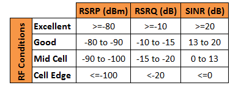
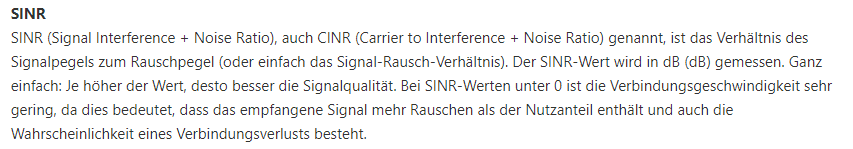

Hallo,
weiß jemand was es da auf sich hat, der SNR Wert ist doch nicht normal oder? Hab totales Delay beim Online spielen. Habe eine Xaomi 5G Box. Internetgeschwindigkeit passt soweit bis auf den Uploud, habe das 250mb Paket.
Lg
Bearbeitet von Jim-Hallo @Jim- ,
ich habe im Internet etwas recherchiert und folgende Info gefunden:


Also die -0,8 Db in deinem Fall interpretiere ich als ganz schlechten Wert, was die Delays beim Zocken erklären könnten.
LG JD.
Hallo Jonathan,
vielen Dank für deine Antwort. Ich habe schon alles mögliche ausprobiert! Ich habe sogar meine PS5 und die Xiaomi 5G Box an einem anderen Standort getestet, und dort hatte ich einen SNR-Wert von ca. 15-17 dB. Die Verzögerung war dort verschwunden. Früher hatte ich nie solche Probleme, als ich noch den ZTE hatte. Liegt es vielleicht an Xiaomi?
Die Hotline kann mir auch nicht weiterhelfen und spricht immer nur von Netzauslastung, aber die kann doch nicht rund um die Uhr so hoch sein! Ich habe das Problem zu jeder erdenklichen Uhrzeit. Außerdem wählt sich die Verbindung immer in ein bestimmtes Frequenzband ein. Wenn ich glücklicherweise manuell in ein anderes Band wechseln kann, steigt der SNR kurzzeitig an, bis er sich wieder in das B3+B7+B1+B8+n78-Band einwählt, in dem nichts funktioniert.
Das ist mittlerweile wirklich eine Frechheit! Ich habe extra vor einiger Zeit einen neuen Monitor für 300 € gekauft, weil ich dachte, das Problem läge daran. Ich habe LAN- und HDMI-Kabel ausgetauscht. Einen neuen Controller gekauft. Gestern habe ich über die Servicehotline ein Ticket erstellt, aber bis heute hat sich noch niemand bei mir gemeldet.
Die Mitarbeiter in der Technikhotline sind auch extrem unfreundlich und haben keine Ahnung. Die Frau hat mir frech gesagt, dass sie nur dafür geschult wurde, Störungsabfragen zu bearbeiten und nicht mehr. Sie kann meine Leitung auch nicht um 2 oder 3 Uhr morgens testen, obwohl ich gesagt habe, dass ich zu dieser Zeit ebenfalls schlechte Werte habe. Jedes Mal, wenn ich dort anrufe, bekomme ich einen noch schlimmeren Mitarbeiter, der absolut keine Ahnung von Technik hat. Bei jeder Frage werde ich in die Warteschleife geschaltet. Das ist wirklich äußerst merkwürdig!
LG
Wirklich sehr schade, dass du diese Erfahrung an der Technik-Hotline gemacht hast. Solltest du keine Lösung erzielen können, frage mal nach, ob du einen Rückruf durch einen der Expert*innen vereinbaren kannst. Vielleicht bekommst du so mehr Infos zu deinem Xiaomi Router.
LG JD.
Am 16.5.2023 um 12:13 schrieb Jim-:Hallo Jonathan,
vielen Dank für deine Antwort. Ich habe schon alles mögliche ausprobiert! Ich habe sogar meine PS5 und die Xiaomi 5G Box an einem anderen Standort getestet, und dort hatte ich einen SNR-Wert von ca. 15-17 dB. Die Verzögerung war dort verschwunden. Früher hatte ich nie solche Probleme, als ich noch den ZTE hatte. Liegt es vielleicht an Xiaomi?
War dieser Standort innerhalb deiner Wohnung/deines Hauses oder ganz wo anders?
Mit den Xiaomi Routern habe ich auch keine gute Erfahrung. Die Internet Flex Box AX3000 vom LTE-Tarif zeigte auch SINR-Werte des unmöglichen an (240dB und höher), dafür aber halbwegs brauchbare RSRQ Werte. Die Xiaomi Internet Flex Box vom 5G Tarif mit dem selben Tarif wie von dir hingegen zeigte am selben Standort einen Wert von 15-20dB an, je nach Tageszeit. Dafür war der RSRQ extrem schlecht, was ebenfalls 24/7 schlechte Downloadraten und zur Primetime extrem hohe Pings zufolge hatte. Router wollten &konnte mir niemand tauschen, da sie keinen anderen auf Lager hatten und der Router ja angeblich einwandfrei funktioniere laut meiner Beschreibung.
Ich denke trotzdem, dass es an den Xiaomi Routern liegt, obwohl diese von den technischen Specs her echt gut wären.
Da ich aber geringen Ping und hohe Bandbreite wegen Home-Office, vielen großen Downloads und online Gaming brauche, musste ich leider zu A1 wechseln (Support ist da meiner Meinung nach etwas schlechter&langsamer und Magenta ist meiner Meinung nach auch freundlicher). Am selben Standort geht komischerweise 5G (sehr gut sogar), was bei Magenta nicht ging (eine Bekannte wohnt Luftlinie gerade mal 1km weit entfernt und bei ihr im Keller funktioniert 5G von Magenta ohne Probleme mit dem ZTE [Internet 5G Box MC801A]. Zudem habe ich keine Probleme bei der Bandbreite oder den Pings, zu jeder Tageszeit 100% der angegebenen "bis zu" Bandbreite und Ping ist nie höher als 30--35ms.
Auch wenn ich zu A1 gewechselt habe, bin ich kein Feind von Magenta. Im Gegenteil: das Forum ist super, die Mitarbeiter sind freundlicher und kompetenter als bei A1 und ich fühle mich besser verstanden, wenn ich dort anrufe.
{kind=link}